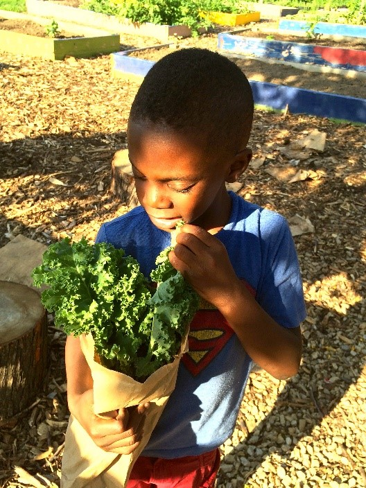

The Urban Tree Connection (UTC) works with residents in Philadelphia’s historically marginalized urban communities to revitalize their neighborhoods by transforming abandoned open spaces into safe and functional places that inspire and promote positive human interaction. Founded in 1989 and incorporated as a 501(c)(3) nonprofit organization in 1997, UTC works with residents of West Philadelphia's Haddington neighborhood to develop community-driven greening and gardening projects on vacant land. Our aim is to cultivate community leadership to improve community health and to develop a local, sustainable, and equitable food system.
The Urban Tree Connection (UTC) works with residents in Philadelphia’s historically marginalized urban communities to revitalize their neighborhoods by transforming abandoned open spaces into safe and functional places that inspire and promote positive human interaction. Founded in 1989 and incorporated as a 501(c)(3) nonprofit organization in 1997, UTC works with residents of West Philadelphia's Haddington neighborhood to develop community-driven greening and gardening projects on vacant land. Our aim is to cultivate community leadership to improve community health and to develop a local, sustainable, and equitable food system.
Over the last 19 years, UTC has transformed the landscape of Haddington alongside community leaders, catalyzing residents' demand for green space and locally produced fresh food. Together, we have redeveloped 29 vacant lots, totaling more than 86,000 square feet of land for communal growing and gathering, sustainable (chemical free) food production and distribution, and multigenerational health and wellness education. This includes our community gem - a ¾ acre urban farm – Neighborhood Foods Farm, which produces over 8,000 pounds of produce annually. Furthermore, UTC has been at the forefront of urban farming and land reclamation movements in Philadelphia, helping pioneer key tools for legal reclamation of abandoned properties.
Neighbors, once isolated from each other, increasingly connect through the gardens created on these formerly abandoned lots, as well as through the diverse array of educational and community programs that UTC offers. These personal connections have, in turn, empowered neighbors to continue to transform their community. Today, Haddington residents are increasingly realizing the potential for growing food on abandoned lots in their neighborhood, and are active partners with UTC in developing a community based local food system aimed at making affordable, healthy, Haddington-grown food available to every neighbor. This community-based food system presents a powerful antidote to food insecurity and diet-related illnesses faced by residents.
Board of Directors
India Blunt, UTC Board Chair
Program Manager, Lenfest Center
Jayne Mariotti Hebron, UTC Board Vice-Chair
Associate, Ballard Spahr, LLP
Katherine Madonna, UTC Board Treasurer
Director of Finance, Department of OBGYN, Penn Medicine
Lauren Fox, UTC Board Secretary
Member, Cozen O'Connor
Joann Manuel, Community Liaison
Executive Secretary, CATCH, Inc.
Keon Mercedes-Liberato
Track Maintenance & Inspection, National Railroad Passenger Corporation
Tamar Sharabi
Engineer II, Field Services, Philadelphia Gas Works
Noelle Warford
Executive Director, Urban Tree Connection
Shane Mayo
Manager of Administrative Services, Philadelphia Gas Works
Our Staff